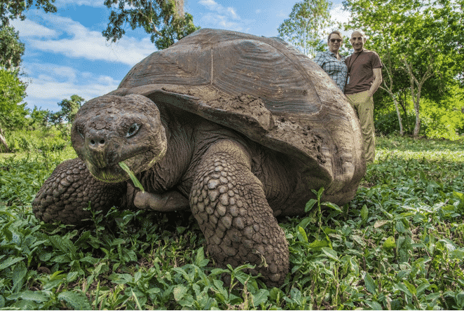

About Us
Wild Rescues is a registered nonprofit wildlife rescue and rehabilitation facility, located in Ocala, Florida. We help injured, sick, neglected, and orphaned wildlife. We help rehabilitate these animals and then release them back into the wild, if possible.
Wild Rescues is a member of the National Wildlife Rehabilitators Association
We help many animals, such as:
- Raccoons
- Squirrels
- Fox
- Birds
- Horses
- Deer
- Pigs
- Reptiles
Did you find an injured or orphaned animal? Contact us to see if we can help